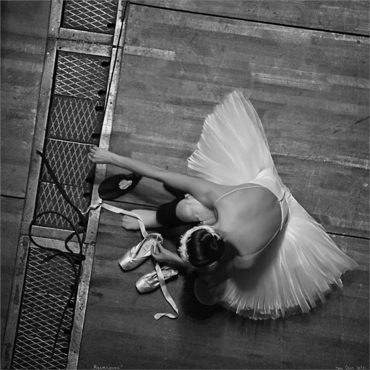

Danza
Danza
Danza
Classica
La forma più pura dell'eleganza, dove il rigore tecnico diventa poesia visiva.
La danza classica è la madre di tutte le discipline, un'arte secolare che unisce grazia, forza e una dedizione assoluta. Nel nostro percorso, la tradizione accademica incontra un approccio attento e rispettoso della fisiologia di ogni allievo, trasformando la tecnica in uno strumento di espressione pura.
Dallo studio alla sbarra fino alle variazioni al centro, ogni movimento è studiato per costruire linee armoniose, equilibrio e una presenza scenica senza tempo. Un viaggio affascinante che non modella solo il corpo, ma forma il carattere, donando un portamento e una classe che accompagnano l'allievo per tutta la vita.
